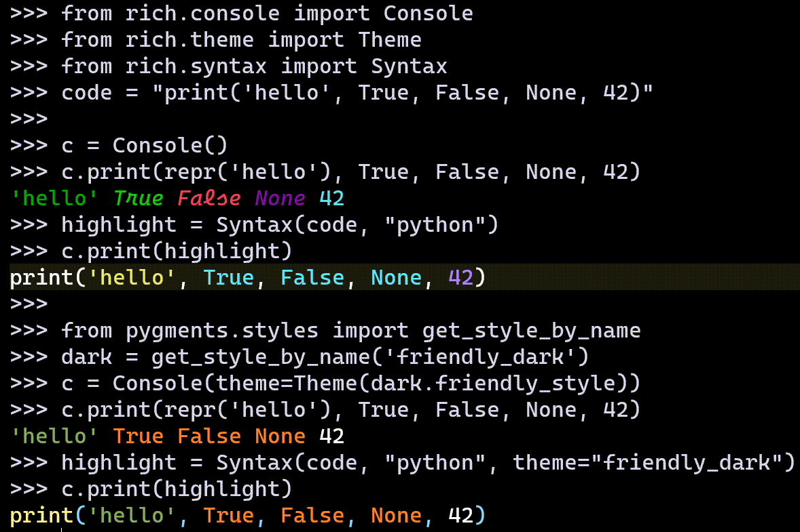

Themes, Styles, and Colours¶
As mentioned before, friendly uses Rich to add colours. Syntax colouring is done by Rich using Pygments. While Pygments comes with many different styles (colour schemes), most of them do not define colours for all possible parts of a Python traceback: depending on the style, we sometimes end up with some text with the same colour as the background.
Furthermore, depending on the context, using the default values, Rich might use different colours for the same Python object.
To ensure that all of friendly’s output would be styled consistently, I have created two pygments styles: one suitable for white or light coloured backgrounds, and one for black or dark coloured backgrounds. These are found in the friendly_styles repository.
UI Design Choice: Red means exception or error
For both themes, I have chosen to use the colour red only for
exception names, such as SyntaxError, for traceback headings,
and for headings showing where an exception occurred.

This choice of only using red to signal something related to an exception results in some styles that might be different from the default style in some environments. For example, Jupyter notebooks use red as the colour for strings.
friendly default theme using Windows Terminal¶
When using Windows, only the new Windows Terminal can faithfully support the full colour gamet provided by Rich as shown in the above screenshot.
Other OS¶
Screenshots taken by MacOS or Linux users would be welcome.
Different background colours¶
Both styles/themes designed for friendly support specifying a different background colour when highlighting. See the section on Mu as an example.
Colour consistency¶
As mentioned previously, depending on the context, Rich can colour Python objects differently. The screenshot below illustrates this, and shows how one can use friendly’s styles to achieve consistency.
{kind=link}
Rich partially supported¶
Designing a pygments colour style is one thing; having it faithfully displayed in a terminal even if it supports escape sequences emitted by Rich is something else altogether. Below you will see a few screenshots taken using ConEmu, using different colour schemes available from ConEmu’s settings. Much to my surprise, even though the colours I have chosen are not standard colours, they are much altered by ConEmu depending on the chosen colour scheme.
{kind=link}
ConEmu: default windows theme¶

Rich not supported¶
Rich works by adding escape sequences which are interpreted by terminals as adding style (colours, font style like bold, italics, or underlined, etc.). Some environment cannot interpret these escape sequences. Here is what happens if we attempt to use Rich together with Python’s IDLE for the same code as shown above:

However, friendly includes special support for adding colours when using IDLE.